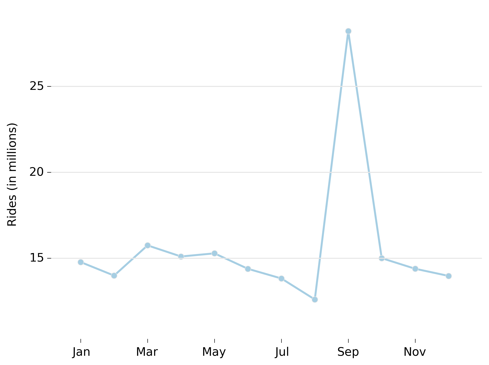
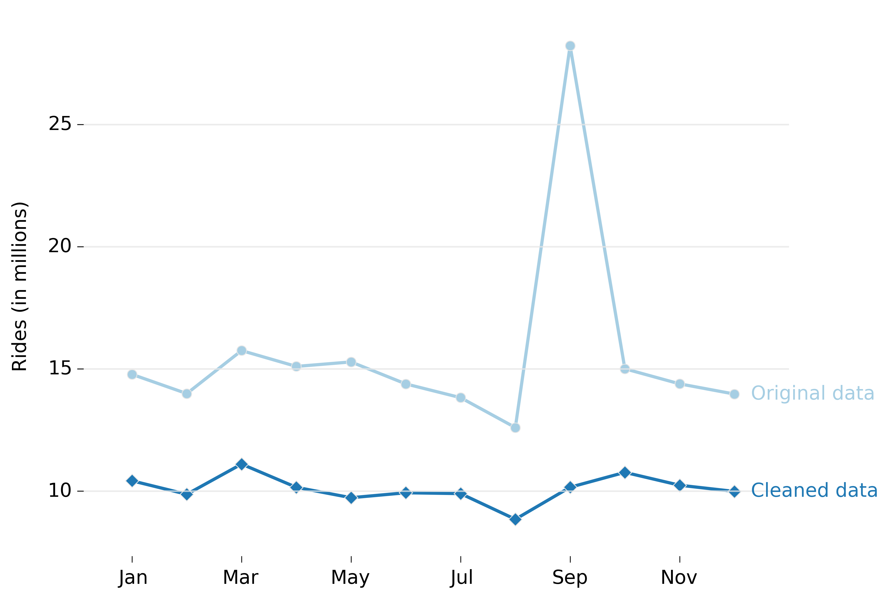
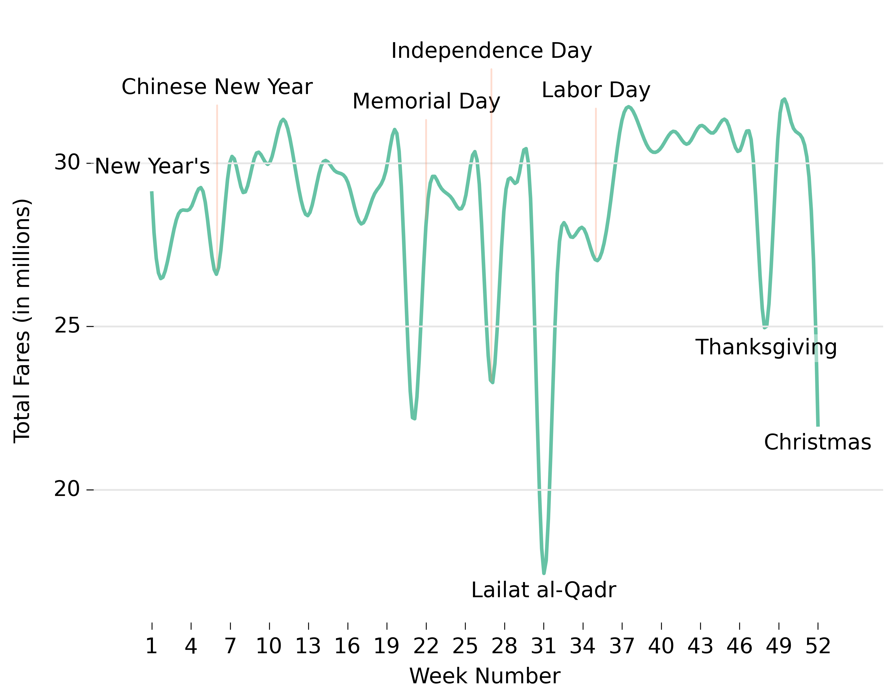
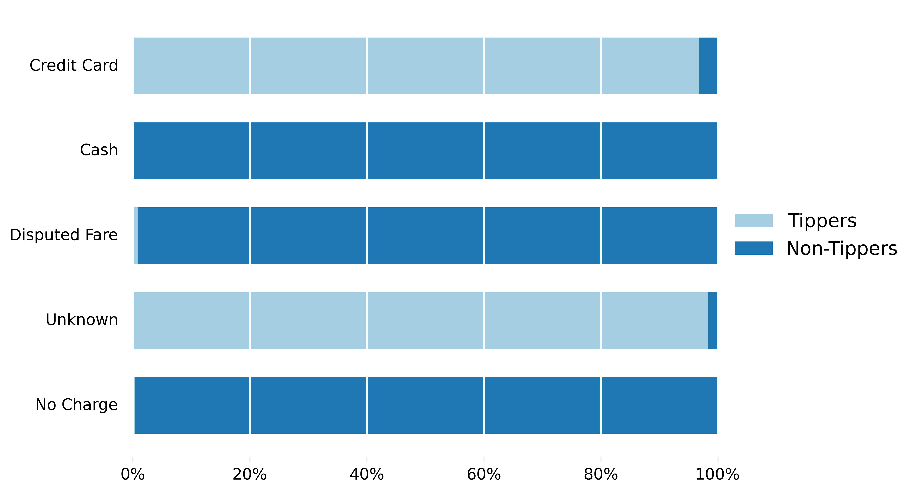
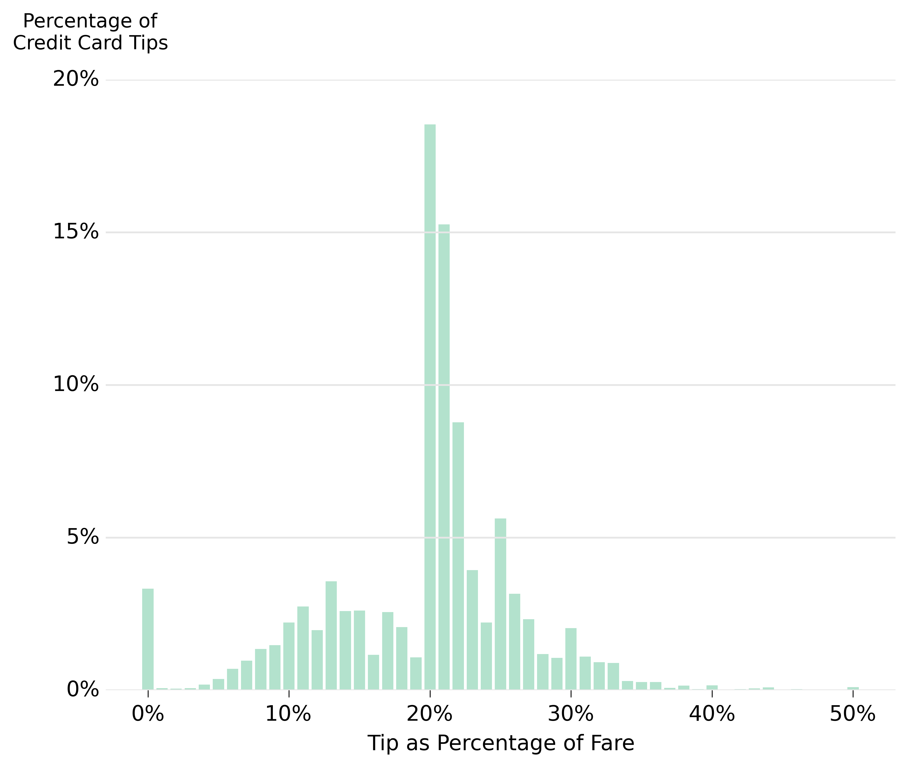

With the
hype
around the legality of Uber in many of the cities that it operates in, it makes all the sense to find out more about the people most affected by this disruptive force; the licensed taxi operators.
If you love data (and lots of it), you're in for a real treat!
Traditionally, one would have to conduct laborous surveys, one taxi operator at a time. The data was initially retrieved by Chris Whong, a data visualization analyst, through a FOIL (Freedom of Information Law) request. In its entirety, it comes in at a whopping 18.7gb compressed.
Fortunately, the internet is full of amazing people and the dataset met Google engineer Jason Hall. It now lives happily as a
Google Big Query project
.
Ideally, we should first come up with a set of hypotheses before delving into data collection/analysis. This is to decrease the likelihood that we get caught in a frame that is overly limiting.
Our case here is a little special as the data has been handed to us on the proverbial silver platter. However, we should not let this luxury stifle our ability to get creative and imaginative about our analysis.
First, let us take stock of what we have. The data is stored in two tables; trip_data and trip_fare.
| trip_data | ||
|---|---|---|
| Attribute | Description | Range |
| medallion | Output of applying an MD5 hash on the unique alphanumeric code assigned to each cab. | N/A |
| hack_license | Output of applying an MD5 hash on the unique alphanumeric code assigned to each cab driver. | N/A |
| vendor_id | The vendor assigned to perform the Taxicab Passenger Enhancements Project (TPEP). VTS refers to Verifone Transportation Systems while CMT is for Mobile Knowledge Systems Inc. | N/A |
| rate_code | Taximeter rate. | N/A |
| store_and_fwd_flag | Unknown attribute. | N/A |
| pickup_datetime | Start timestamp of the trip, in the format mm-dd-yyyy hh24:mm:ss. | N/A |
| dropoff_datetime | End timestamp of the trip, in the format mm-dd-yyyy hh24:mm:ss. | N/A |
| passenger_count | Number of passengers on the trip. Default value is 1. | 0 to 255 |
| trip_time_in_secs | Trip time measured by the taximeter, in seconds. | -6480 to 4,294,966 |
| trip_distance | Trip distance measured by the taximeter, in miles. |
0.00 to 15,331,800.00
|
| pickup_longitude | GPS longtitude coordinate of the pickup location. | -3084.2959 to 2945.9587 |
| pickup_latitude | GPS latitude coordinate of the pickup location. | -3547.9207 to 3310.3645 |
| dropoff_longitude | GPS longitude coordinate of the drop off location. | -3116.2698 to 2386.9951 |
| dropoff_latitude | GPS latitude coordinate of the drop off location. | -3547.9207 to 3577.1321 |
| trip_fare | ||
|---|---|---|
| Attribute | Description | Range |
| medallion | Output of applying an MD5 hash on the unique alphanumeric code assigned to each cab. | N/A |
| hack_license | Output of applying an MD5 hash on the unique alphanumeric code assigned to each cab driver. | N/A |
| vendor_id | The vendor assigned to perform the Taxicab Passenger Enhancements Project (TPEP). VTS refers to Verifone Transportation Systems while CMT is for Mobile Knowledge Systems Inc. | N/A |
| pickup_datetime | Start timestamp of the trip, in the format mm-dd-yyyy hh24:mm:ss. | N/A |
| payment_type |
CSH: Cash
CRD: Credit card NOC: No charge DIS: Disputed fare UNK: Unknown |
N/A |
| fare_amount | The meter fare, in USD. | -$1430.00 to $158,995.81 |
| surcharge | Extra fees, such as rush hour and overnight surcharges, in USD. | -$19.50 to $854.50 |
| mta_tax | Metropolitan commuter transportation mobility tax, in USD. | -$0.50 to $80.05 |
| tip_amount | Tip amount, in USD. | -$96.82 to $888.19 |
| tolls_amount | Total price paid for tolls, summed across all tolls for the trip, in USD. | -$22.25 to $960.09 |
| total_amount | Total charges presented to the passenger at time of fare payment (includes tip for non-cash trips), in USD. | -$1430.00 to $685,908.10 |
Those with a keen sense of observation will realize that there is something funky going on with parts of the data.
For example, passenger counts ranging from 0 to 255 sure look fishy. Last I checked, it is pretty difficult to get that many people into a car, and having 0 passengers sounds a lot like the plot of the next blockbuster horror. Let's proceed field by field to squash these errors.
| passenger_count | count |
|---|---|
| 0 | 5,035 |
| 1 | 121,959,711 |
| 2 | 23,517,494 |
| 3 | 7,315,829 |
| 4 | 3,582,103 |
| 5 | 10,034,696 |
| 6 | 6,764,789 |
| 7 | 35 |
| 8 | 25 |
| 9 | 26 |
| 129 | 1 |
| 208 | 13 |
| 255 | 2 |
The large number of negative trip times seem to suggest that many amongst us have mastered time travel. Unfortunately, we will have to remove them from our population. This can be easily done by requiring that trip time be equal to the difference between the drop off and pick-up times. This will leave us with quite a few trips where trip time is zero, which we will remove too.
We will take a simple approach to this and simply remove all entries where trip distance is zero.
A more complex approach will involve ensuring that the distance travelled is not smaller the cartesian (straight-line) distance between the pickup and dropoff points, as that is physically impossible.
Most of us are not geographers, and thank god to Google for the rescue. Oceanteacher.org tells us that the geo-coordindate system works by taking the center (0,0), a point somewhere in the Gulf of Guinea.
A +90 latitude brings us to the North Pole, while -90, you guessed it, represents the South Pole. Longitude ranges from -180 to 180, which sums up to 360 degrees.
We can definitely do better by removing all values out of range. According to Netstate, New York spans a longitude of -79.4554 to -71.4725, and a latitude of 40.2940 to 45.042.
As of 2010, the NYC Taxi & Limousine Commission has set the initial fares to be $2.50. This makes our task of clearing the strange and hilarous negative fares a little easier.
Another area which deserves our attention is the large numbers of folks who appear to be over or underpaying their fares due to dodgy travel distances logged. We take a rather liberal approach here and remove any entries where the cost per mile is less than $2.50 or more than $30.00.
While it appears that we're on an erroenous data zapping spree, this field deserves a second look.
| fare_amount | surcharge | mta_tax | tip_amount | tolls_amount | total_amount |
|---|---|---|---|---|---|
| $33.00 | $0.50 | $0.50 | $0.00 | $0.00 | $685,908.10 |
We have come a long way to coming up with a cleaner dataset. However, you will notice an anomaly when you join the tables on medallion, hack license and pickup times.

The spike isn't due to people suddenly feeling great urges to take cabs in September. It is due to the fare data for September being duplicated in the trip_fare table, which we will have to account for and remove.
Putting it together, we arrive at a query that filters out records we identified as erroneous. It is worth noting that another person looking at this dataset will come to slightly (or totally!) different conclusions, and this is totally alright. The key is knowing how we arrive at our conclusions and being able to intelligently weight the pros and cons on the treatment of the raw data.

Across each month, with the exception of May, June and July, the cleaned dataset maintains the same ridership trends as the original dataset. This is definitely good news, as the general trends are kept intact.

Broken down by week, I'm certainly surprised and somewhat baffled by some of the findings.
The Expected
There is a dip in ridership numbers that can be attributed to each major holiday observed in New York City, such as Independence Day, Thanksgiving and Christmas.
The Baffling
What is the cause for the dip in Week 2? Is it because the Week 1 ridership numbers have been bolstered by the large throngs of people that need taxi rides home post their New Years' parties?
Equally baffling is the huge dip seen in Week 21.
The Unexpected
The huge drop in ridership revenue in Week 31 came as a huge surprise. An article in the Daily Mail Online written by Louise Boyle appears to shed some light on this. In it, Seth Kadish, a data scientist, demonstrates that the most popular surname is, surprise surprise, Mohammad - and its alternate spellings MD, Mohammed, Muhammad, and Mohamed.
Tipping has always been an intriguing subject for me, especially so given that I am from a country that does not have this practice. How does one decide how much to tip? Does one get more tips for better service?
While it is unfortunate we do not have customer ratings to perform that analysis, there is no need to fret. There is still much that we can learn from our dataset.

The above plot, taken at face value, may seem to suggest that passengers paying cash are the personifications of Mr. Crabs from Spongebob, and that the use of credit cards will magically result in more tips for the drivers.
This can't be further from the truth. Tipping NYC cab drivers is an established social norm, with many sites citing 15% to 20% as a good rule of thumb contingent on good service provided. The above result is likely due to cash tips not being religiously captured, while credit card tips are captured by the machine at the point of payment by the taximeter.
Therefore, the next few sections will solely focus on the findings from our credit card swipping passengers.
Does the very thought of having to tip cause great anxiety in you? Give too little and be seen as a miser or too much and feel the pain of losing out.

If you tip between 20% to 25% of the total fare, well done! You make up about 52% of the tipping population. It is also rather sad to note that not giving any tips is the 7th most popular choice, making up 3.32% of the credit card paid trips.
Chris Whong - For invoking FOIL (The Freedom of Information Law) to retrieve this amazing dataset.